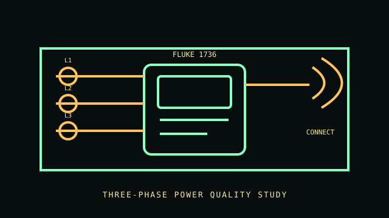

[ THREE-PHASE LOGGER // 1736 ]
Fluke 1736 Power Quality Logger
Portable three-phase power logger for energy and load studies with power-quality monitoring. The meter body is sold in regional kits; voltage leads and current probes must be checked as part of the exact package SKU.

VARIANT CONTROL: This listing identifies the 1736 instrument model. Regional package suffixes and included probes vary; document the package number and probe part numbers for any measurement.
Specifications & compatibility
| Exact model / function | Fluke 1736 Three-Phase Power Quality Logger; package and accessory suffixes vary by market. |
|---|---|
| Measured metrics | Voltage, current, power, energy and power-quality/event parameters for three-phase load studies. |
| Voltage / phase | Three-phase logging. Safety measurement categories are 600 V CAT IV / 1,000 V CAT III; follow the lower applicable rated voltage and the exact lead/accessory manual. |
| Current range / accuracy | Current range depends on the selected Fluke current probe; do not assign a fixed range to the logger body. Fluke publishes typical voltage accuracy of ±0.2% of reading + 0.01% of range under stated conditions. |
| Display / network / output | Local display, Fluke Connect/Wi-Fi capability and USB/data transfer through supported accessories and software. |
| Form factor | Portable handheld logger with separate voltage leads and current probes. |
| Host compatibility | Fluke Connect and Fluke Energy Analyze Plus software; check current application/software requirements and logger firmware. |
| Electrical safety | CAT rating is not a substitute for the actual voltage/range rating of the logger, leads and probes. Follow all user-manual connection steps, PPE rules and local live-work requirements; use trained electrical personnel. |
Installation & archival notes
- Record logger model, regional kit, current-probe models, lead set, firmware and test setup.
- Confirm all probe and lead ratings before connecting; the accessory with the lowest rating governs.
- Do not connect or remove probes on exposed energized circuits without following the manual's safe work procedures.
Manufacturer sources
- Fluke — 1736/1738 power quality logger product pageProduct identity, feature set and available configurations.
- Fluke — 1736/1738 Series user manualElectrical ratings, installation, accessory and safety instructions.
- Fluke — 1736/1738 operating manual PDFPrimary model manual with connection, probe, specification and safety details.
- Fluke — power logger software downloadsManufacturer software and host support resources.